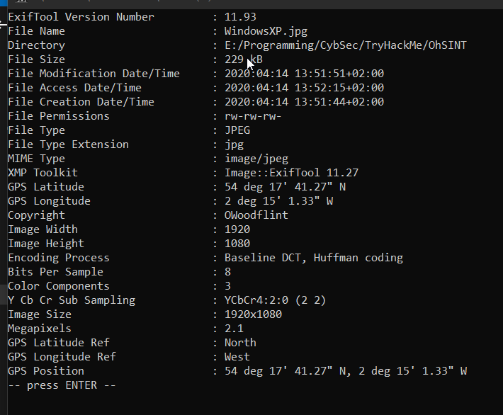

exiftool is used to view metadata of the image:

Info to note:
Copyright: OWoodflint
GPS coordinates:
54 deg 17' 41.27" N Latitude
2 deg 15' 1.33" W Longitude
This points to a location near Hawes, UK